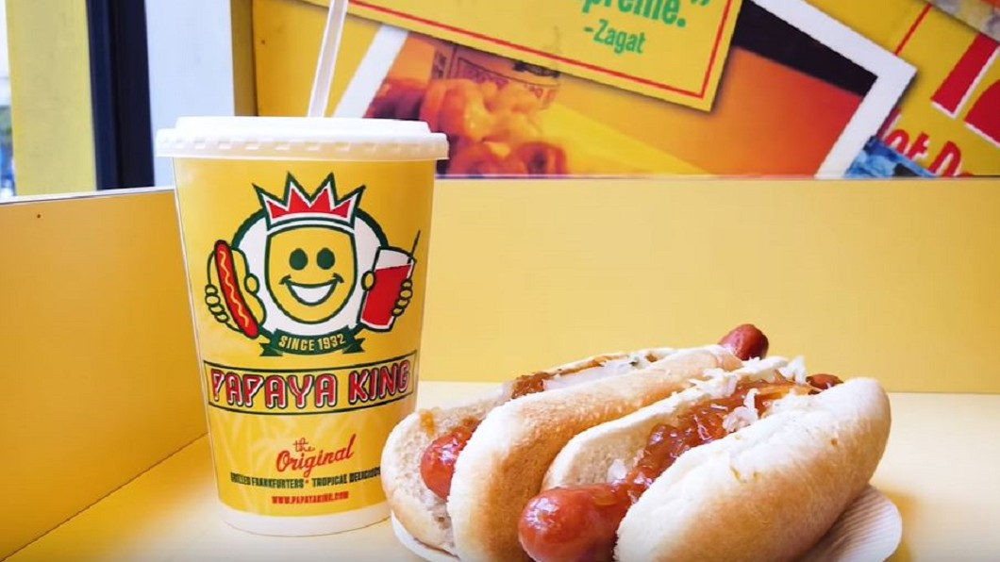

法式甜點風靡全球，不僅口感富有層次，造型更是精緻華麗，
一位來自法國的甜點師傅為了慶祝到紐約開業第15年，特別推出一系列充滿紐約風情的點心，造型相當可愛，
包括熱狗堡、披薩，還有蝴蝶脆餅，帶您一起來看看。 來到紐約，許多人都會品嚐道地的熱狗堡，不過咬下去可別驚訝，
因為眼前的這個，其實是一份法式甜點。 手指餅乾浸泡椰子糖漿，變身成熱狗堡的麵包，中間的熱狗則是由覆盆子奶油餡製成，
而看起來像黃色芥末醬的其實是百香果凝乳，最上面再灑上椰子碎末，就完成了。 今年是法國甜點師傅多明尼克安賽爾來到紐約的第15年，
為了慶祝這個里程碑，甜點店特別推出一系列充滿紐約風情的精緻點心，包括這座城市的食物、建築，以及對師傅個人來說，特別有意義的事物。
法國甜點師傅多明尼克安賽爾：「我在紐約待了15年了，我想要為紐約創造一個獨特的系列。」 不只熱狗堡，
還有披薩、蘋果、蝴蝶脆餅、貝果，以及咖啡杯等造型的甜點，全部都是具有代表性的紐約小物。
原本香酥的蝴蝶脆餅，變身成花生醬和焦糖口味的蛋糕。 法國甜點師傅多明尼克安賽爾：「蝴蝶脆餅蛋糕裡面，其實是花生醬慕斯，還有鹹焦糖。」
再搭配脆薄片，鹹鹹甜甜，層次豐富。 這個充滿童趣的披薩造型甜點，則是由白乳酪慕斯為基底，
裡頭是杏仁蛋糕，上面鋪上新鮮的草莓，還有挖了洞的白色巧顆力，最後加上一片香草布雷頓餅乾，整體口感濃郁香醇。
